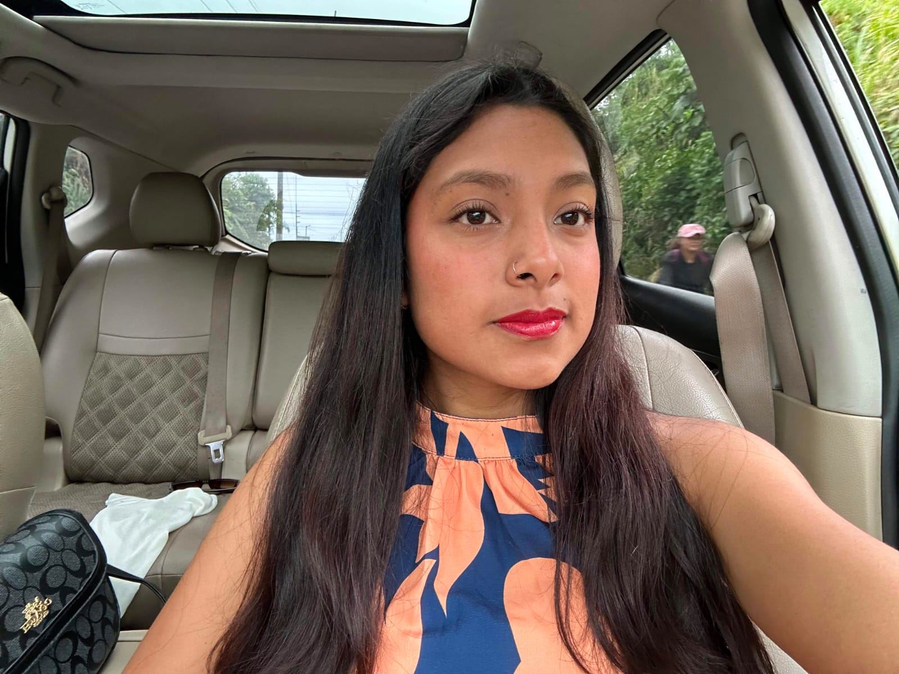
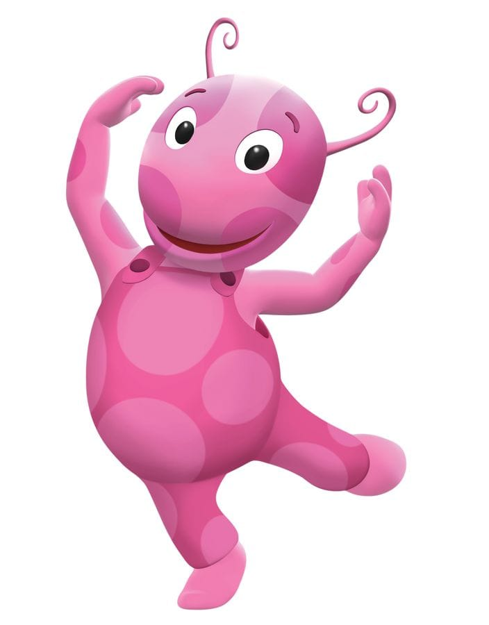

Bienvenido a mi espacio temático inspirado en Uniqua y los Backyardigans.
Descubre mis gustos, mi carrera universitaria y mi mundo al estilo de Uniqua.
Actualmente curso el 4to semestre de la carrera. Me encanta la lógica, programar nuevos proyectos y el desarrollo web.
Con muchas metas por delante, disfrutando de cada etapa de mi vida universitaria y aprendiendo constantemente.
Disfruto mucho expresarme con la música, el canto y el baile. Me llena de energía positiva y alegría.
¡Mi comida favorita por excelencia! Cualquier plato con una buena pasta es mi debilidad total.
Es una parte muy especial e importante en mi vida que me da paz, fortaleza y guía en todo momento.
Alegre, entusiasta y anfitriona oficial de la Feria Virtual de Backyardigans.